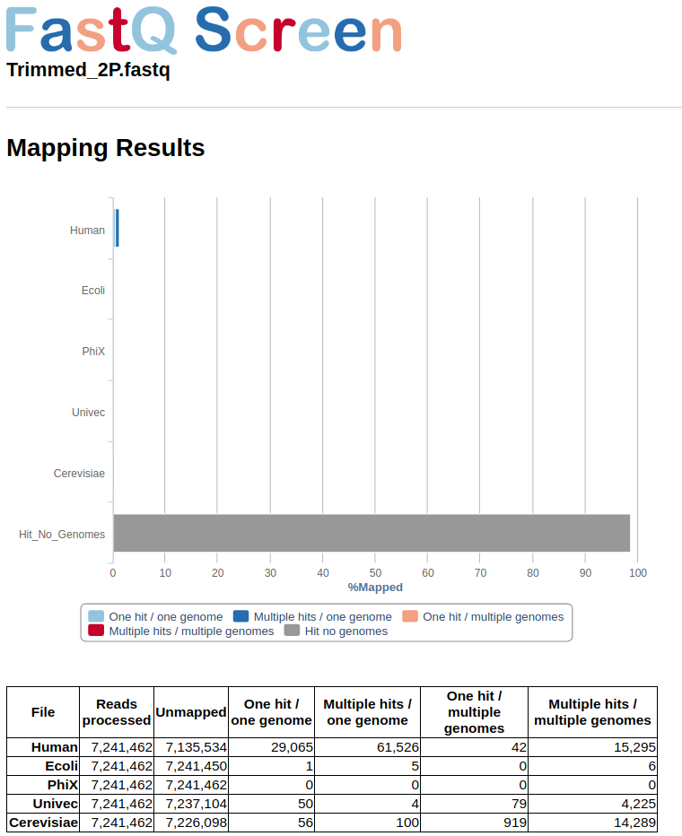

NGS protocols to wrangling Transcriptomics.
Sanger sequencing perform a quality profile per nucleotide during sequencing as method to determine accuracy of the base calling position. It value is an ASCII character called Phred score and can be used to separete good from bad reads sequenced (Phred > Q score). Phred quality scores Q
are defined as a property which is logarithmically correlated to the probabilities P of incorrect base-calling (Base call accuracy). For example, if Phred assigns a quality score of 30 to a base, the chances that this base is called incorrectly are 1 in 1000. This quality details can be found below each sequence line within any fastq file.
Ussualy, errors during illumina sequencing are in the 5’ primer as high Q score whereas 3’ primer usually is degraded. Before starting your assembly you need to check and remove the set of low-quality sequence from your libraries as follow:
fastqcmultiqctrimmomaticfastQ ScreenFastQC aims to provide a simple way to do some quality control checks on raw sequence data coming from high throughput sequencing pipelines. It provides a modular set of analyses which you can use to give a quick impression of whether your data has any problems of which you should be aware before doing any further analysis.
To details visit Babraham Site here
It can be run easely through all your fastq libraries as follow:
$ mkdir fastqc
$ srun -n 1 fastqc *.gz -t 24 -o ./fastqc &
In addition, you can aggregate results from fastqc across all your libraries (zip format) into a single report using multiqc tool. And can be run as follow:
$ mkdir multiqc
$ export PATH=/LUSTRE/apps/Anaconda/conda2/bin:$PATH
$ source activate multiqc_py2.7
$ multiqc ./fastqc/*zip -o ./multiqc --data-format json --export
A complete example report coud be visualized in the next file multiqc.html
To details visit site here
Trimmomatic performs a variety of useful trimming tasks for illumina paired-end and single ended data.The selection of trimming steps and their associated parameters are supplied on the command line. The follow syntaxis is configure to clip the adapter content for each library using the TruSeq3-PE; then, reads below the 36 bases long are dropped and average quality ≤ 25 are cutted within a sliding window of 5-bases. Also, 5-bases heads are cropped per read.
By default the value for $TRUSEQ refers to the path where the file TruSeq3-PE-2.fa is found. By default in: /home/rgomez within the cluster.
/// loading Java current version
$ module load jdk1.8.0_60
$ for i in $(ls *gz | grep fastq);
do
FORWARD=$(echo $i | grep R1); \
REVERSE=$(echo $i | grep R2); \
java -jar trimmomatic-0.36.jar PE -phred33 \
$FORWARD $REVERSE \
${FORWARD%.fastq.gz}.P.qtrim.fq.gz ${FORWARD%.fastq.gz}.UP.qtrim.fq.gz \
${REVERSE%.fastq.gz}.P.qtrim.fq.gz ${REVERSE%.fastq.gz}.UP.qtrim.fq.gz \
ILLUMINACLIP:/LUSTRE/bioinformatica_data/genomica_funcional/rgomez/oyster-rawdata/trimmomatic/TruSeq3-PE-2.fa:2:30:10 HEADCROP:5 SLIDINGWINDOW:5:25 MINLEN:36
The current trimming steps are:
To details visit site here
Trinity as embed the configuration to run trimmomatic automatically before the assembly; We prefer this way, but also you can run independently as code above or skip this part and run fastq Screen as final step before assembly.
FastQ Screen allows you to set up a standard set of libraries against which all of your sequences can be searched. Your search libraries might contain the genomes of all of the organisms you work on, along with PhiX, Vectors or other contaminants commonly seen in sequencing experiments.
We recomend to integrate in this step the non redundant Univec database. UniVec is a database that can be used to quickly identify segments within nucleic acid sequences which may be of vector origin (vector contamination). In addition to vector sequences, UniVec also contains sequences for those adapters, linkers, and primers commonly used in the process of cloning cDNA or genomic DNA. This enables contamination with these oligonucleotide sequences to be found during the vector screen (Pati A. et al 2015).
The follow table show the reference used in this step:
| Type | Reference | Source |
|---|---|---|
| Laboratory | PhiX | Enterobacterial Phage ( genome PhiX174) |
| UniVec | Adapters, common contaminant | |
| Homo Sapiens | Human (genome versión 38) | |
| Saccharomyce Cerevisiae | Yeast |
For any dabase screening versus your libraries fastq Screen provide a tab-delimited configure file to set up the reference list of databases of your chose. Also, fastq screeen cat implement either, bowtie (used for sequences less than 100 bp ie. small RNAs) or bowtie2 (bw2 used in paired-end sequences round to 200 bp). In this way, you need to index your databases before modify the configure file as this example:
$ srun bowtie2-build reference.fa reference &
Finally, modify the configure file (dowload a template here) and then run the tool:
fastq_screen \
--aligner bowtie2 \
--conf fastq_screen.conf \
--nohits \
--outdir ./output Trimmed_2P.fastq
To details in how to configure
fastq_screenvisit the Babraham Site here
The grey bar from figure in below space shows than more than 90 % of reads had not hits with any from the reference used in the configure file. Those reads are saved in a file with tagged_filter.fastq extention and are requiered for Assembly step.
